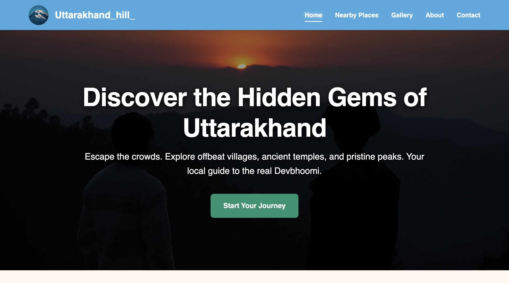

Rule-Based Website Chatbot
An intelligent customer support agent designed to answer common queries instantly 24/7.
React
Flask
MongoDB
A collection of my recent work and experiments.
Explore my detailed portfolio showcasing expertise in Web Development, IoT Solutions, and AI Automation. From building secure interactive portals (like the CSC Center) to deploying smart hardware systems (Bluetooth & Irrigation), each project demonstrates a commitment to robust, user-centric engineering using Python, React, and Embedded C++.
An intelligent customer support agent designed to answer common queries instantly 24/7.

Precision agriculture solution with real-time soil moisture monitoring and remote control.
Wireless hardware control system with a custom Android app and low-latency communication.

Digital platform for managing citizen services, registrations, and tracking applications.

Immersive platform showcasing hidden gems in Uttarakhand with interactive galleries.
The true metric of technical competence isn't found in a list of programming languages on a resume; it is aggressively demonstrated in the successful deployment of real-world projects. Welcome to the official portfolio of Aditya Negi, an elite freelance web developer in Almora, Uttarakhand. This curated collection of digital products illustrates a vast technical spectrum—ranging from rapid-prototype static landing pages utilizing HTML5 and CSS3, to highly complex, data-driven web applications engineered on modern stacks like React and Node.js.
When clients approach me for digital maturation, it's about engineering a robust operational backbone. As a senior web developer in Uttarakhand, I meticulously architecture platforms to handle peak-load concurrent user connections without latency.
This involves establishing secure RESTful API connections and implementing normalized relational databases (SQL) or flexible data lakes (NoSQL), depending entirely on the projected data scale.
Projects like our travel platforms require hyper-optimized frontend assets to ensure high-resolution media loads instantly. By utilizing asynchronous JavaScript (AJAX) and advanced caching methods, the perceived load time approaches zero.
This obsessive focus on performance optimization guarantees that Search Engine Optimization (SEO) algorithms consistently rank these websites at the very top of relevant search queries.
Merging physical hardware engineering with web interfaces places Aditya Negi in a unique category. The "Smart Irrigation System", coded using C++, isn't just a physical mechanism—it is a live-streaming data endpoint.
By transmitting gigabytes of environmental telemetry directly to a secure cloud server, clients can monitor real-time soil moisture analytics, trigger mechanical valves remotely, and view historical sensor data aggregated across custom dashboards.